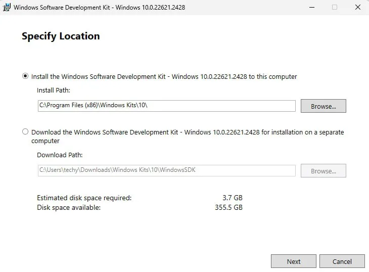
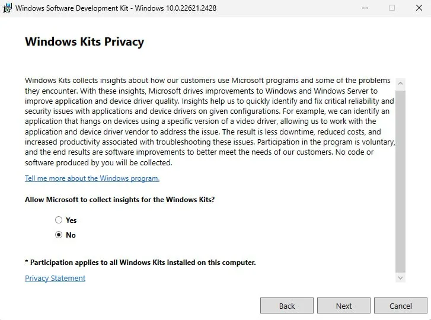
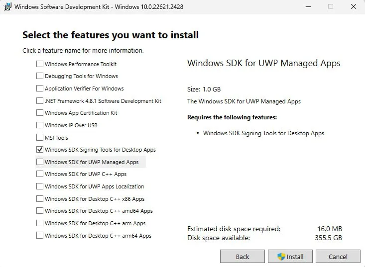
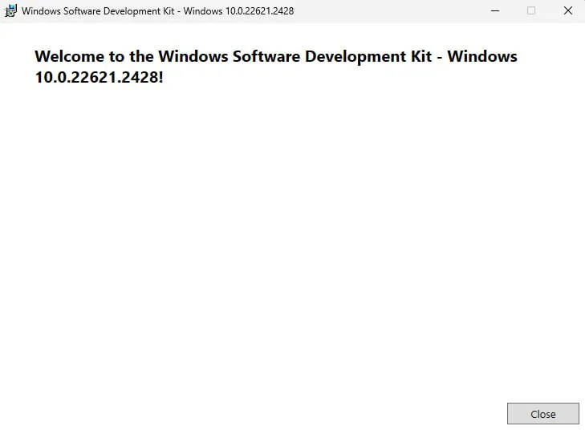
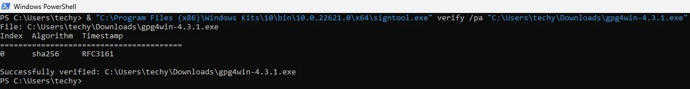

We believe security software like Whonix needs to remain Open Source and independent. Would you help sustain and grow the project? Learn more about our 14 year success story and maybe DONATE!
Template:Download and Verify GPG4win in Windows
Install SignTools
SignTools is a Windows command-line tool that uses Authenticode to digitally sign files and verify both signatures in files and timestamp files. SignTool is available as part of Microsoft Windows SDK, which can be installed in just a few easy steps.
1. Download the latest version of the SDK for the most recent stable version of Windows from the Windows SDK and emulator archive. Make sure to select "Install SDK".
2. Double-click the downloaded file. There's no need to change the default installation path. Click "Next".
Figure: Installation Path

3. There's no need to enable Microsoft Insights collection, so select "No" and then click "Next".
Figure: Windows Kits Privacy

4. Install the necessary SDK package.
The Windows SDK installer provides a number of different packages
that can be installed. The only package needed for gpg4win
verification is Windows SDK Signing Tools for Desktop Apps
(SignTools). Choose it then press on "Install".
Figure: Select SignTools Package

5. Once the installation is complete, close the installer.
Figure: Installation completed

Download and Verify Gpg4win
SignTool can be used to verify the authenticity of the
gpg4win package itself.
Note: To simplify the SignTool verification process, be sure
to download the gpg4win package to the Downloads
directory.
1. Download the gpg4win package.
- Navigate to https://gpg4win.org/
- Download the latest version of
gpg4win.
At the time of writing gpg4win-4.3.1.exe was the latest
version.
2. Verify the gpg4win package by
running SignTool from the command prompt.
Now you need to manually locate signtool.exe and run it
as a normal *.exe file. You will need to provide a path to
your gpg4win-latest.exe file. Open PowerShell then add the
following:
Notes:
- Replace
[username]with your computer's username; the uploaded image uses "techy" as an example. - Replace gpg4win-
[version number].exe with the version of the downloaded gpg4win file..
& "C:\Program Files (x86)\Windows Kits\10\bin\10.0.22621.0\x64\signtool.exe" verify /pa "C:\Users\[username]\Downloads\gpg4win-[version number].exe".

 Warning: If verification fails, delete the
Warning: If verification fails, delete the
gpg4win package and repeat the download and verification
process again.
If verification passes, then you are ready to trust and install gpg
using this file, i.e., gpg4win-latest.exe.